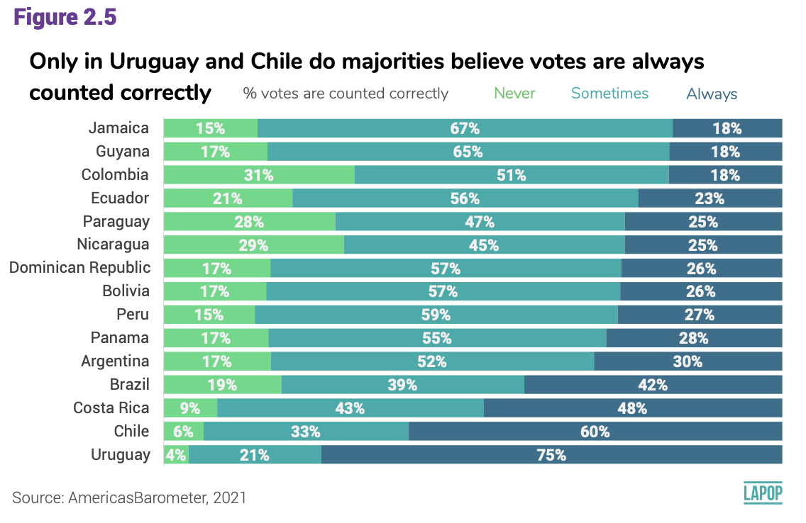
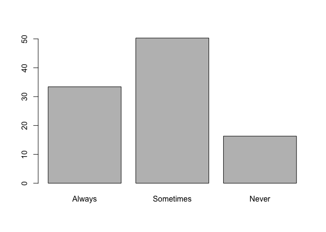
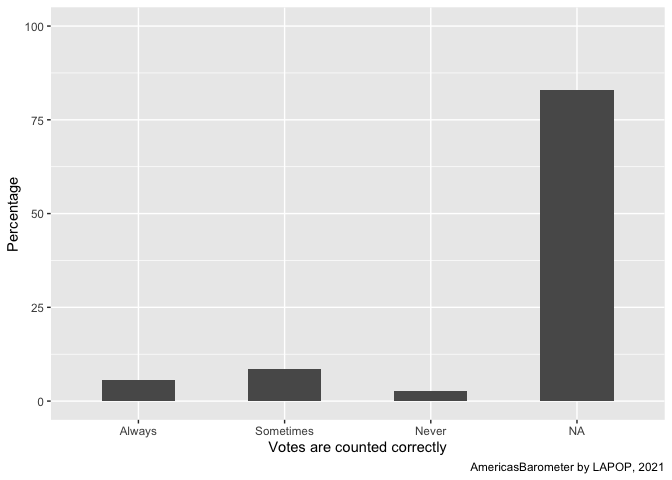
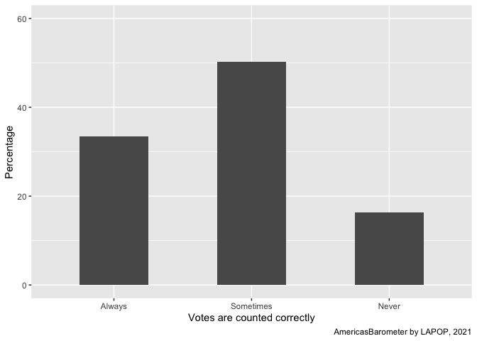
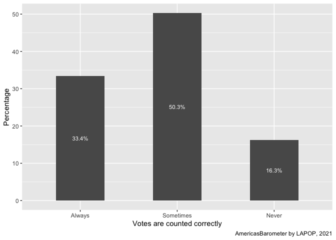
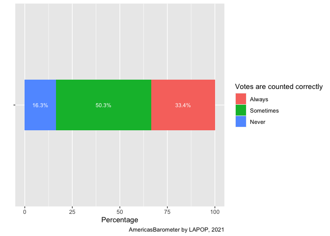
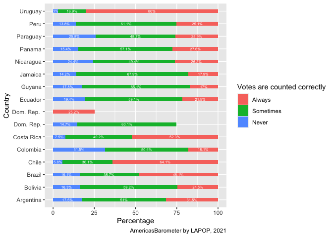
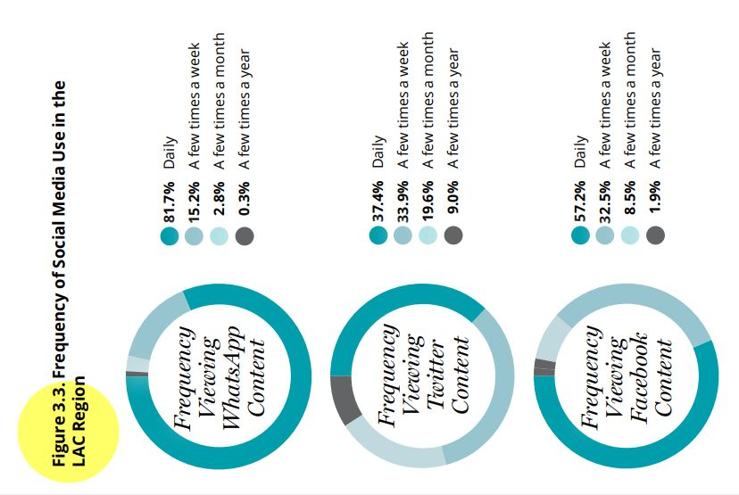
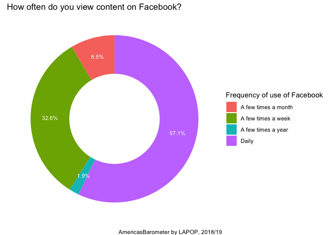
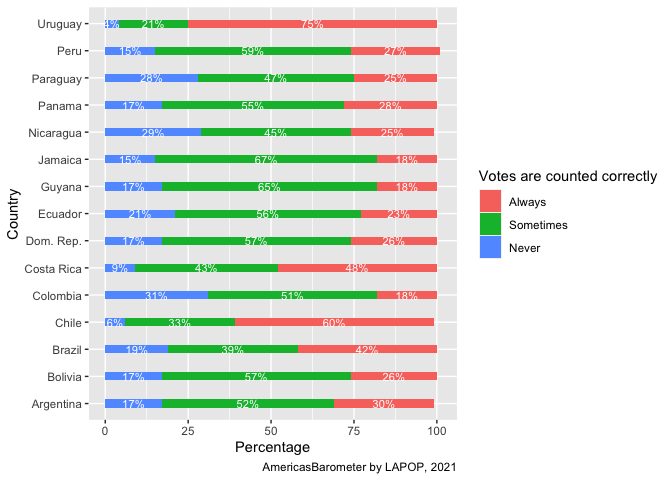

Introduction
In this section we will continue to use the regional report “The
Pulse of Democracy”, available here,
where the main findings of the 2018/19 round of the AmericasBarometer
are presented. One of the sections of this report reports data on social
networks and political attitudes. This section presents data on the use
of the Internet and the use of social networks, in general and by
country. In this case we are going to work with the frequency of use of
social networks. In this section we are going to descriptively analyze
these variables on the frequency of use of social networks, ordinal
variables (or factor variables, in the language of R).
About the dataset
The data we are going to use should be cited as follows: Source:
AmericasBarometer by the Latin American Public Opinion Project (LAPOP),
wwww.LapopSurveys.org. This document reloads a trimmed database. To
reproduce the results shown in this section, you must clean the
Environment.
This database is hosted in the “materials_edu” repository of the
LAPOP account on GitHub. Using the rio library and the
import command, we can import this database from this
repository. In addition, the data from countries with codes less than or
equal to 35 are selected, that is, the observations of the United States
and Canada are eliminated.
library(rio)
lapop18 = import("https://raw.github.com/lapop-central/materials_edu/main/LAPOP_AB_Merge_2018_v1.0.sav")
lapop18 = subset(lapop18, pais<=35)
We also load data from the 2021 round.
lapop21 = import("https://raw.github.com/lapop-central/materials_edu/main/lapop21.RData")
lapop21 = subset(lapop21, pais<=35)
Describing and plotting variables
In the section on descriptive statistics, which can be seen here,
we worked with nominal variables, with dichotomous response options
(Yes/No). In this document we will work with politomic ordinal
variables.
Votes are correctly counted
In this section, we use the variable COUNTFAIR1. Votes are counted
correctly and fairly. Would you say it happens always, sometimes or
never? Figure 2.5 of the report The Pulse of Democracy, available here,
shows results of this variable by country.

In the same way as with nominal variables, these ordinal variables
have to be declared as “factor” in new variables.
library(haven)
lapop21$countfair1r = as.factor(lapop21$countfair1)
Then, these variables have to be labelled. We can create a basic
descriptive table with the command table.
levels(lapop21$countfair1r) = c("Always", "Sometimes", "Never")
table(lapop21$countfair1r)
##
## Always Sometimes Never
## 3477 5235 1698
To calculate tables with percentages, rounded to one decimal place,
we use prop.table and round. Again, these
percentages are not the same as those presented in the report because
these calculations do not include factor weights.
round(prop.table(table(lapop21$countfair1r)), 3)*100
##
## Always Sometimes Never
## 33.4 50.3 16.3
As we mention in the previous section, we can plot this variable
using the command barplot.
barplot(prop.table(table(lapop21$countfair1r))*100)

Other option is create this plot using the library
ggplot. One option is working with the dataset from
scratch. The following code, however, shows a big bar with the
percentage of missing values. This is because this question was applied
to a split sample. The dataset records NA to the other half of those who
do not answer this question.
library(ggplot2)
ggplot(data=lapop21, aes(x=countfair1r))+
geom_bar(aes(y=..prop..*100, group=1), width=0.5)+
labs(x="Votes are counted correctly", y="Percentage",
caption="AmericasBarometer by LAPOP, 2021")+
coord_cartesian(ylim=c(0, 100))

To prevent that the figure shows a bar for NAs, these observations
should be filtered before producing the graph. In the same manner as the
previous section, we can filter the NAs for the variable “countfair1”
with the command subset and the specification
!is.na.
ggplot(data=subset(lapop21, !is.na(countfair1r)), aes(x=countfair1r))+
geom_bar(aes(y=..prop..*100, group=1), width=0.5)+
labs(x="Votes are counted correctly", y="Percentage",
caption="AmericasBarometer by LAPOP, 2021")+
coord_cartesian(ylim=c(0, 60))

Other option, that simplify the code, is to create a frequency table
of this variable with the command table and
prop.table. This table is rounded to one decimal place with
the command round and is saved as a dataframe with the
command as.data.frame in an object “count”. This table
records two columns, the first is called “Var1” with the labels of the
variables and the second is called “Freq” and stores the
percentages.
count = as.data.frame(round(prop.table(table(lapop21$countfair1r)), 3)*100)
count
We can use this table “count” to produce a bar plot with the command
ggplot. The specification aes defines that the
values of the column “Var1” are presented in the X axis and the values
of the column “Freq” are shown in the Y axis. We define a simple bar
plot, using the command geom_bar( ), where internally we
define the width of bars. We define labels of axis and the “caption”
with the specification labs.
ggplot(data=count, aes(x=Var1, y=Freq))+
geom_bar(stat="identity", width=0.5)+
geom_text(aes(label=paste(Freq, "%", sep="")), color="white",
position=position_stack(vjust=0.5), size=3)+
labs(x="Votes are counted correctly", y="Percentage",
caption="AmericasBarometer by LAPOP, 2021")

Figure 2.5 shows a stacked bar with information for each country.
First, we present a stacked bar plot using all observation of the 2021
round of the AmericasBarometer, that is including all countries. To
produce a stacked horizontal bar, we use the variable “Freq”, now in the
X axis. We use the option fill to divive this bar by values
of the variable “Var1”. Because Y axis does not show a variable, we
define as " ". In the same way as we change the variables
in the axis, we can also change the labels in labs. In this
specification we change the label of the legend with
fill.
ggplot(data=count, aes(x=Freq, y="", fill=Var1))+
geom_bar(stat="identity", width=0.3)+
geom_text(aes(label=paste(Freq, "%", sep="")), color="white",
position=position_stack(vjust=0.5), size=3)+
labs(x="Percentage", y="", fill="Votes are counted correctly",
caption="AmericasBarometer by LAPOP, 2021")

To replicate the comparative graph by country, we have to create a
contingency table between variable “countfair1” and “pais”. This
crosstable is saved in an object “count_country”. We should note that
the dataframe creates a row for each value of “countfair” in each
country. In this way, we have 3 option x 20 countries = 60 rows.
count_country = as.data.frame(round(prop.table(table(lapop21$pais, lapop21$countfair1r), 1), 3)*100)
count_country
We calculate data for each value of the variable “pais” in this
table, even when there is no data in the variable “countfair” because
this question was not fielded in a country. For this reason, we have to
drop rows of countries where we could not record information. We can do
this with the specification [-c(rows), ]. After that, we
can create a vector with the names of countries. This list of countries
is repeated three times (15 remaining countries x 3 options). This
vector is added to the dataframe in a column “country”.
count_country = count_country[-c(1:4,18,21:24,38,41:44,58),]
country = c("Nicaragua", "Costa Rica", "Panama", "Colombia", "Ecuador", "Bolivia", "Peru",
"Paraguay", "Chile", "Uruguay", "Brazil", "Argentina", "Dom. Rep.", "Jamaica", "Guyana",
"Nicaragua", "Costa Rica", "Panama", "Colombia", "Ecuador", "Bolivia", "Peru",
"Paraguay", "Chile", "Uruguay", "Brazil", "Argentina", "Dom. Rep.", "Jamaica", "Guyana",
"Nicaragua", "Costa Rica", "Panama", "Colombia", "Ecuador", "Bolivia", "Peru",
"Paraguay", "Chile", "Uruguay", "Brazil", "Argentina", "Dom. Rep.","Jamaica", "Guyana")
count_country$country = country
count_country
With this dataframe “count_country”, we have the elements to
replicate the figure with stacked bars by country. In the specification
aes, we define that percentages are in X axis, countries in
Y axis and that each bar is divided by column “Var2”.
ggplot(data=count_country, aes(x=Freq, y=country, fill=Var2))+
geom_bar(stat="identity", width=0.3)+
geom_text(aes(label=paste(Freq, "%", sep="")), color="white",
position=position_stack(vjust=0.5), size=2)+
labs(x="Percentage", y="Country", fill="Votes are counted correctly",
caption="AmericasBarometer by LAPOP, 2021")

Frequency of use of social networks
The 2018/19 round evaluates the use of social networks and includes
variables to measure the use of Facebook, Twitter and Whatsapp: SMEDIA2
measures the use of Facebook. How often do you view content on Facebook?
SMEDIA5.How often do you see content on Twitter? and SMEDIA8. How often
do you use Whatsapp? These variables have as response options:
- Daily
- A few times a week
- A few times a month
- A few times a year
- Never
In the same way as with nominal variables, these variables have to be
declared as “factor” in new variables.
lapop18$smedia2r = as.factor(lapop18$smedia2)
lapop18$smedia5r = as.factor(lapop18$smedia5)
lapop18$smedia8r = as.factor(lapop18$smedia8)
Footnote 15 of the report indicates that “interviewees who report
never seeing content on Facebook and Twitter, and who indicate that they
never use Whatsapp, are considered non-users of these social networks”
(p. 64). For this reason, Figure 3.3 of frequency of use of social
networks (page 57) only includes the categories “Daily”, “Some times a
week”, “Some times a month” and “Some times a year”. The category
“Never” is excluded.

In the new variables we are going to declare the value 5,
corresponding to “never”, as “NA”, that is, as a missing value in R.
library(car)
lapop18$smedia2r = car::recode(lapop18$smedia2r, "5=NA")
lapop18$smedia5r = car::recode(lapop18$smedia5r, "5=NA")
lapop18$smedia8r = car::recode(lapop18$smedia8r, "5=NA")
Then, these variables have to be labeled and the basic descriptive
tables generated, with the command table.
levels(lapop18$smedia2r) <- c("Daily", "A few times a week",
"A few times a month", "A few times a year")
levels(lapop18$smedia5r) <- c("Daily", "A few times a week",
"A few times a month", "A few times a year")
levels(lapop18$smedia8r) <- c("Daily", "A few times a week",
"A few times a month", "A few times a year")
table(lapop18$smedia2r)
##
## Daily A few times a week A few times a month A few times a year
## 8633 4927 1286 282
table(lapop18$smedia5r)
##
## Daily A few times a week A few times a month A few times a year
## 795 728 422 193
table(lapop18$smedia8r)
##
## Daily A few times a week A few times a month A few times a year
## 14151 2646 495 50
To calculate tables with percentages, rounded to a decimal place, we
use prop.table and round. Again, these
percentages are not exactly the same as those presented in the report
because these calculations do not include survey weights.
round(prop.table(table(lapop18$smedia2r)), 3)*100
##
## Daily A few times a week A few times a month A few times a year
## 57.1 32.6 8.5 1.9
round(prop.table(table(lapop18$smedia5r)), 3)*100
##
## Daily A few times a week A few times a month A few times a year
## 37.2 34.1 19.7 9.0
round(prop.table(table(lapop18$smedia8r)), 3)*100
##
## Daily A few times a week A few times a month A few times a year
## 81.6 15.3 2.9 0.3
To present all the data in a joint table, the table of each social
network is saved in a new R object (named after each social network).
Then all of these partial tables, containing the same answer choices,
are joined as rows with the rbind command. This new joint
table is saved as a new dataframe “table”.
Facebook = round(prop.table(table(lapop18$smedia2r)), 3)*100
Twitter = round(prop.table(table(lapop18$smedia5r)), 3)*100
Whatsapp = round(prop.table(table(lapop18$smedia8r)), 3)*100
table = as.data.frame(rbind(Facebook, Twitter, Whatsapp))
table
To get a better presentation of the table, you can use the
kable command from the knitr package or the
formattable command from the knitr
package.
library(knitr)
kable(head(table), format="markdown", digits=1)
| Facebook |
57.1 |
32.6 |
8.5 |
1.9 |
| Twitter |
37.2 |
34.1 |
19.7 |
9.0 |
| Whatsapp |
81.6 |
15.3 |
2.9 |
0.3 |
library(formattable)
formattable(table)
|
|
Daily
|
A few times a week
|
A few times a month
|
A few times a year
|
|
Facebook
|
57.1
|
32.6
|
8.5
|
1.9
|
|
Twitter
|
37.2
|
34.1
|
19.7
|
9.0
|
|
Whatsapp
|
81.6
|
15.3
|
2.9
|
0.3
|
To graph this variable we are not going to follow the same procedure
as in the previous section. In this section we are going to work
directly from the table created with the percentages of the three social
networks. This table has each social network in the rows and the answer
options in the columns. In order to graph this data, it is required that
the social networks are in the columns and the answer options in the
rows, so first we are going to transpose this table. We do this
procedure using the data.table library and the
transpose command. We save these transposed data in a new
table “table_tr”.
This command transposes the data, but leaves the rows and columns
unnamed. Columns are first named with the command colnames
using the row names of “table”. The rows are then named with the command
rownames using the column names of “table”.
Finally, we require a column inside “table_tr” that contains the
response labels of the smedia questions. These labels are like row
names. To include them as one more variable, add a variable
“tabla_tr$lab” to which the names of the rows are assigned with
row.names.
library(data.table)
table_tr = transpose(table)
colnames(table_tr) = rownames(table)
rownames(table_tr) = colnames(table)
table_tr$lab <- rownames(table_tr)
table_tr
Second, the ggplot2 library is activated to plot the
data stored in “table_tr” with the command ggplot. Within
this command it is specified that this command is going to work with the
dataframe “table_tr” (and not with lapop18), data=table_tr.
The “aesthetic” is specified: the X axis will not include a variable,
the Y axis will show the “Facebook” information from the dataframe
“table_tr”, and fill=lab indicates that data will be
divided by categories of the variable stored in “lab”.
Then the geom_bar layer is added to indicate that it
will be graphed in bars of width (width = 1) and that the
bar will replicate what is specified in the aesthetic
(stat="identity"). With geom_text you add the
labels of the data, with the percentage symbol, and you specify the
position of the text with position=position_stack(…) and
the size with size=3. With coord_polar you
transform the bars into a pie chart. Finally, the “theme” is defined
with theme_void indicating a white background and the
legend tag is modified with scale_fill_discrete.
library(ggplot2)
ggplot(data=table_tr, aes(x="", y=Facebook, fill=lab))+
geom_bar(width=1, stat="identity")+
geom_text(aes(label=paste(Facebook, "%", sep="")), color="white",
position=position_stack(vjust=0.5), size=3)+
coord_polar("y", start=0)+
theme_void()+
scale_fill_discrete(name="Frequency of use of Facebook")

In figure 3.3 of the report “The Pulse of Democracy” a circular
“donna” type graph is presented. To exactly reproduce this type of
graph, a few details of the above syntax have to be accommodated. We set
“x=2” in the “aesthetics” and set limits on the X axis, between 0.5 and
2.5, so that when the axis is rotated, the “hole” inside the circle is
created.
ggplot(data=table_tr, aes(x=2, y=Facebook, fill=lab))+
geom_bar(stat="identity")+
geom_text(aes(label=paste(Facebook, "%", sep="")), color="white",
position=position_stack(vjust=0.5), size=3)+
coord_polar("y")+
theme_void()+
scale_fill_discrete(name="Frequency of use of Facebook")+
labs(title="How often do you view content on Facebook?",
caption="AmericasBarometer by LAPOP, 2018/19")+
xlim(0.5, 2.5)

To replicate the bar chart, some modifications are made to the code
above. For example, in “aesthetics”, it is now indicated that the
variable “smedia2r” goes on the X axis and the percentage “per” goes on
the Y axis. In addition, the specification of polar coordinates is
eliminated. We can add a title to the chart, axis labels, and a caption
with the specification labs. Finally, the Y axis is defined
between 0 and 60 with the coord_cartesian specification. An
important point is that this graph can also be saved in an object in R,
which we will call “plot1”
plot1 <- ggplot(table_tr, aes(x=lab, y=Facebook))+
geom_bar(stat="identity", width=0.5)+
geom_text(aes(label=paste(Facebook, "%", sep="")), color="black", vjust=-0.5)+
labs(title="Frequency of use of social networks", x="Frequency of use of Facebook",
y="Percentage", caption="AmericaBarometer by LAPOP, 2018/19")+
coord_cartesian(ylim=c(0, 60))
plot1

Saving a chart to an object allows us to later add more layers or
enhancements to the chart. The plot above, for example, has the
“Frequency of use” labels on a single line, so they could overlap.
To improve this visualization, these labels can be tilted, but if you
want to maintain the horizontality to facilitate reading, what you can
do is separate the long labels into two or more lines. This can be done,
for example, by creating a vector with the new labels. Long tags can be
broken into lines by including \n between the texts you
want to break. Then a new layer can be added to the object “plot1” to
replace the labels with the new ones divided into lines. This is done
with the specification scale_x_discrete where we define to
use the labels in the new vector.
etiq <- c("Daily", "A few times\n a week", "A few times\n a month",
"A few times\n a year")
plot1 + scale_x_discrete(labels=etiq)

This makes the graph more readable. So far, we have replicated the
tables and graphs that were used with the nominal variables, now using
ordinal variables. If you want to replicate the pie chart of the other
social networks, you can run the same code, but change the social
network column. For Twitter, for example, you would have.
plot2 <- ggplot(data=table_tr, aes(x=2, y=Twitter, fill=lab))+
geom_bar(stat="identity")+
geom_text(aes(label=paste(Twitter, "%", sep="")), color="white",
position=position_stack(vjust=0.5), size=3)+
coord_polar("y")+
theme_void()+
scale_fill_discrete(name="Frequency of Twitter use")+
labs(title="How often you view content on Twitter", caption="Americas Barometer by LAPOP, 2018/19")+
xlim(0.5, 2.5)
plot2

Cross tables
Table 3.1 (page 55) of the report “The Pulse of Democracy” shows the
percentages of use of social networks by country. Then, on page 56,
there is a table with the percentage of social network users by
sociodemographic characteristics, for example, urban/rural, male,
average age, average wealth, and years of study.

We will start by replicating the general data on the use of social
networks that is reported in Table 3.1. To replicate this table, you
must first define the variable “country” and the variables for the use
of social networks (smedia1, smedia4 and smedia7).
lapop18$smedia1r = as.factor(lapop18$smedia1)
lapop18$smedia4r = as.factor(lapop18$smedia4)
lapop18$smedia7r = as.factor(lapop18$smedia7)
levels(lapop18$smedia1r) = c("Yes", "No")
levels(lapop18$smedia4r) = c("Yes", "No")
levels(lapop18$smedia7r) = c("Yes", "No")
lapop18$pais = as.factor(lapop18$pais)
levels(lapop18$pais) = c("México", "Guatemala", "El Salvador", "Honduras",
"Nicaragua","Costa Rica", "Panamá", "Colombia",
"Ecuador", "Bolivia", "Perú", "Paraguay",
"Chile", "Uruguay", "Brasil", "Argentina",
"Rep. Dom.", "Jamaica")
table(lapop18$pais) #Country
##
## México Guatemala El Salvador Honduras Nicaragua Costa Rica
## 1580 1596 1511 1560 1547 1501
## Panamá Colombia Ecuador Bolivia Perú Paraguay
## 1559 1663 1533 1682 1521 1515
## Chile Uruguay Brasil Argentina Rep. Dom. Jamaica
## 1638 1581 1498 1528 1516 1513
table(lapop18$smedia1r) #Facebook
##
## Yes No
## 15389 11573
However, the variable “user” of each social network is calculated as
a condition of two variables, as seen in the document on data
manipulation, with the following code.
lapop18$fb_user = ifelse(lapop18$smedia1==1 & lapop18$smedia2<=4, 1, 0)
lapop18$tw_user = ifelse(lapop18$smedia4==1 & lapop18$smedia5<=4, 1, 0)
lapop18$wa_user = ifelse(lapop18$smedia7==1 & lapop18$smedia8<=4, 1, 0)
These variables are plotted in the report in Figure 3.1. To reproduce
this data, you can describe these variables.
prop.table(table(lapop18$fb_user))*100
##
## 0 1
## 43.8289 56.1711
prop.table(table(lapop18$tw_user))*100
##
## 0 1
## 92.056769 7.943231
prop.table(table(lapop18$wa_user))*100
##
## 0 1
## 35.76561 64.23439
As in previous graphs, with this data a dataframe can be created that
would be used to make the circular graphs shown in the report.
To replicate the table of use of social networks by country, first,
bivariate tables are created with the percentage of those who use and
the percentage of those who do not use each social network in each
country. These tables are stored in R objects. These objects are then
merged using the commands cbind to bind the columns and
as.data.frame to bind the tables as a dataframe. This table
also presents the percentages of those who do not use these social
networks. To present a table that includes only those who do use social
networks, columns are eliminated, using the specification
[, c(-1,-3,-5)], which indicates that we want to eliminate
columns 1 , 3 and 5. Finally, the dataframe columns are renamed.
fbcountry = round(prop.table(table(lapop18$pais, lapop18$fb_user), 1), 3)*100
twcountry = round(prop.table(table(lapop18$pais, lapop18$tw_user), 1), 3)*100
whcountry = round(prop.table(table(lapop18$pais, lapop18$wa_user), 1), 3)*100
tablecountry = as.data.frame(cbind(fbcountry, twcountry, whcountry))
tablecountry = tablecountry[, c(-1,-3,-5)]
varnames = c("Use facebook", "Use Twitter", "Use Whatsapp")
colnames(tablecountry) = varnames
tablecountry
To have a better presentation of the table, there are two
alternatives: the first with the knitr library and the
other with the formattable library.
library(knitr)
kable(head(tablecountry), format="markdown", digits=1)
| México |
47.9 |
7.6 |
55.1 |
| Guatemala |
43.2 |
6.5 |
47.6 |
| El Salvador |
56.2 |
6.7 |
56.0 |
| Honduras |
44.6 |
4.8 |
46.9 |
| Nicaragua |
48.1 |
5.8 |
47.7 |
| Costa Rica |
66.6 |
8.0 |
81.6 |
library(formattable)
formattable(tablecountry)
|
|
Use facebook
|
Use Twitter
|
Use Whatsapp
|
|
México
|
47.9
|
7.6
|
55.1
|
|
Guatemala
|
43.2
|
6.5
|
47.6
|
|
El Salvador
|
56.2
|
6.7
|
56.0
|
|
Honduras
|
44.6
|
4.8
|
46.9
|
|
Nicaragua
|
48.1
|
5.8
|
47.7
|
|
Costa Rica
|
66.6
|
8.0
|
81.6
|
|
Panamá
|
34.6
|
5.8
|
56.7
|
|
Colombia
|
60.0
|
10.7
|
63.5
|
|
Ecuador
|
66.9
|
11.2
|
60.2
|
|
Bolivia
|
57.9
|
5.6
|
63.5
|
|
Perú
|
61.4
|
7.6
|
58.6
|
|
Paraguay
|
60.5
|
8.0
|
69.2
|
|
Chile
|
62.9
|
9.2
|
75.5
|
|
Uruguay
|
66.5
|
9.8
|
80.0
|
|
Brasil
|
59.2
|
7.9
|
74.9
|
|
Argentina
|
67.3
|
12.9
|
78.9
|
|
Rep. Dom.
|
61.9
|
9.5
|
68.2
|
|
Jamaica
|
45.9
|
4.5
|
68.1
|
Crosstables with sociodemographic variables
On page 56 of the report “The pulse of democracy” the results of the
crosstable between the variables use of social networks and
sociodemographic variables such as urban/rural, gender, age, wealth and
years of education are presented.

The variable “q1” records the gender of the interviewee. This
variable is encoded as follows:
- Man
- Woman
To calculate a “dummy” variable called “man”, such that male is 1 and
female is 0, one way to do it is algebraically (2-variable q1). In this
way, now the men maintain the value 1 (2-1) and the women become 0
(2-2). In this case, the new variable “man” is created as a numeric
variable. We are going to keep the variable as “num” so that, further
down, we can calculate the mean of this variable (something that cannot
be done with a variable declared as a factor).
lapop18$men <- 2-lapop18$q1
table(lapop18$men)
##
## 0 1
## 14084 13943
The urban/rural variable is named “ur” in the database and is encoded
as follows:
- Urban
- Rural
In the same way as with gender, the formula 2- variable ur is used,
but this variable is converted into a factor and is labeled.
lapop18$urban <- 2-lapop18$ur
lapop18$urban = as.factor(lapop18$urban)
levels(lapop18$urban) <- c("Rural", "Urban")
table(lapop18$urban)
##
## Rural Urban
## 8089 19953
The crosstables of the use of social networks by some of the
sociodemographic variables will be presented, to better understand how
the general table is constructed. For example, the report shows in Table
3.2, after the general population column, the columns for WhatsApp users
and non-users (variable “wa_user”) and in the rows, the first
corresponds to urban (variable “urban”, where 0 is rural and 1 urban).
It is presented that among WhatsApp users, 76.7% are urban and among
non-users, 62% are urban. These data are generated with the
table command that allows you to make a contingency table
of 2 variables. In this case it should be noted that each variable has a
title. So the command is
table(title1 = var1, title2 = var2). Then, the
prop.table command is used so that the observations are not
displayed, but the percentages. This command allows you to calculate the
percentages of the total (the default option), of the rows and of the
columns. To calculate on columns you must specify
prop.table(table(...), 2). If you wanted the percentage
over the rows, the code would be prop.table(table(...), 1).
This table can be saved as a dataframe with the
as.data.frame command in a new object “t1”.
t1 = as.data.frame(round(prop.table(table(Urban = lapop18$urban, User = lapop18$wa_user), 2)*100, 1))
t1
The rows corresponding to “Urban” in this table reproduce the data in
Table 3.2: 62.1% are urban among non-Whatsapp users and 76.7% are urban
among users.
Now the table will be presented between Facebook users (variable
“fb_user”) and men (variable “men”), but presenting only the percentages
used in the table and now using the code style of the Tidyverse, using
the “pipe” operator. The first thing is to define the variable “fb_user”
as a factor and label it. Then, the subset command is used
to filter the missing cases on the “fb_user” variable. Then the results
are requested to be grouped by categories of the variable “fb_user”.
With the summarise command, the average of the “man”
variable is saved in the “man” column, with the mean
command that includes the specification na.rm=T so as not
to include missing values in the calculation. In this case, it takes
advantage of the fact that the variable “men” is a dummy variable, in
such a way that the average corresponds to the proportion of men.
lapop18$fb_user = as.factor(lapop18$fb_user)
levels(lapop18$fb_user) = c("No user", "User")
library(tidyverse)
table1 = subset(lapop18, !is.na(fb_user)) %>% #To not include the NA group of Facebook users
group_by(fb_user) %>%
dplyr::summarise(Men=mean(men, na.rm=T)*100) #na.rm=T is included because man has NAs
table1
These are the percentages for Facebook users, in the row of the Male
variable in Table 3.2. That is, among non-users, 49.9% are men and among
users this percentage is 49.7%. So far we have replicated some results
from Table 3.2. The other data can continue to be reconstructed through
combinations of the social network user variables and the
sociodemographic variables.
Two-Variable Bar Chart
The cross between WhatsApp users and the urban variable can also be
seen in a grouped bar graph. The first thing we will do is define the
variable “wa_user” as a factor and label it. Then, it is required to
create a table with the grouped data. The “t1” dataframe created earlier
can be used, but here we will again use the “pipe” operator to recreate
the data.
For this, it is grouped both by use of WhatsApp and by urban/rural,
that is, in four combinations. In each subgroup the n is calculated.
Since the % have to be calculated for each group of “wa_user”, it is
grouped again and the % of each subgroup is calculated, in such a way
that the percentages add up to 100% in each subgroup of “wa_user”.
lapop18$wa_user = as.factor(lapop18$wa_user)
levels(lapop18$wa_user) = c("No user", "User")
face <- subset(lapop18, !is.na(wa_user)) %>% #!is.na is used so that NAs are not reported in the table
group_by(wa_user, urban) %>% #groups are configured
dplyr::count() %>% #n is calculated
group_by(wa_user) %>% #It is grouped by WhatsApp user
dplyr::mutate(percentage = round(n/sum(n), 3)*100) #The percentage is calculated in each WhatsApp group
face
The data in this new table is exactly the same as in “t1”. With the
table ready, use the ggplot command, defining “wa_user” to
be the variable on the X axis, the Y axis to be the percentage, and the
subgroups to be formed by the variable “urban” with the
fill specification. . The dodge specification
is used in geom_bar to have the bars separated by each
group.
ggplot(data=face, aes(x=wa_user, y=percentage, fill=urban, ymax=100))+
geom_bar(position="dodge", stat="identity")+
geom_text(aes(label=paste(percentage, "%", sep="")),
position=position_dodge(width=0.9), vjust=-0.25)+
ylab("Percentage")+
xlab("Whatsapp user")

If we wanted to make the graph with stacked bars, we would have to
change the position="stack" specification in
geom_bar and the position=position_stack()
specification in geom_text.
ggplot(data=face, aes(x=wa_user, y=percentage, fill=urban, ymax=100))+
geom_bar(position="stack", stat="identity")+
geom_text(aes(label=paste(percentage, "%", sep="")),
position=position_stack(), vjust=2.5)+
ylab("Percentage")+
xlab("Whatsapp user")

In both cases, the light blue bars indicate the percentages reported
in table 3.2 of the report and correspond to the proportion of people
living in urban areas between users and non-users.
Summary
In this document we have worked with ordinal categorical variables,
such as the frequency of use of social networks. The use of contingency
tables of two categorical variables and the creation of grouped bar
graphs for 2 variables have also been introduced.
Calculations including survey weights
Example using the 2021 dataset
With the data of the 2021 wave of the AmericasBarometer, we have
calculated the percentages of the variable that gauges whether the votes
are counted correctly. The figure we have produced is for the total
sample; it means, for all the countries. The Figure 2.5 of the report
The Pulse of Democracy presents results for each country.
If we calculate percentages with the commands table and
prop.table, we would get different results from those show
in the Figure. For example, Nicaragua, country 5, display that 26% of
citizens in this country indicate that votes are always counted
correctly, 49% indicate that votes are sometimes counted correctly, and
24.4% that voter are never counted correctly. However, the figure shows
that 29% indicate that votes are never counted correctly in Nicaragua,
45% that sometimes, and 25% that always. These percentages do not match
those produced with these commands.
round(prop.table(table(lapop21$pais, lapop21$countfair1r), 1), 3)*100
##
## Always Sometimes Never
## 1
## 2
## 3
## 4
## 5 26.2 49.4 24.4
## 6 52.3 40.2 7.5
## 7 27.6 57.1 15.4
## 8 18.1 50.4 31.5
## 9 21.5 59.1 19.4
## 10 24.5 59.2 16.3
## 11 25.1 61.1 13.8
## 12 25.9 48.3 25.8
## 13 64.1 30.1 5.8
## 14 80.0 16.9 3.0
## 15 48.1 35.7 16.1
## 17 31.5 51.0 17.5
## 21 25.2 60.1 14.7
## 22
## 23 17.9 67.9 14.2
## 24 17.0 65.1 17.8
This difference is due to the fact that commands table
and prop.table do not include survey weights in
calculations. More information about these differences are found here.
To replicate the results of Figure 2.5, there are some options. The
first option is using an specialized librery called
survey.
To be allowed to use this library, we should first prepare the
dataset, dropping missing values of variables that define the survey
design. An additional step is transforming the variables in the
dataframe. When we import the dataset, the system reads these variables
as “haven_labelled” type, that is, they ma.intain labels of variables,
with which we may produce a codebook. This may be useful in other
ocassions, but it generates problems with the library
survey. For this, we transform the variables to other type
with the command sapply.
Once prepared the dataset, we activate the library and declare the
survey design. In the last section, we also use this library to
calculate the results with the survey weights in the round 2018.
Contrary to this code, the 2021 round of the AmericasBarometer uses
phone interviews, and not face to face. For this reason, the primary
unit of sampling is the individual, and so it is defined in the variable
“upm”. The variable that defines strata is “strata” (and not
“estratopri”, as in the 2018 round). The weighting variable is still
“weight1500”.
With this information, we save the design in an object
“design21”.
library(survey)
design21 = svydesign(ids = ~upm, strata = ~strata, weights = ~weight1500, nest=TRUE, data=lapop21)
The library survey includes native commands to perform
multiple operations including survey weights. One is this commands is
svytable that allows to make a crosstable between the
variable “countfair1” and “pais”, specifying the design. This command
returns the weighting absolute frequencies. For this reason, we have to
nest this code in the command prop.table to calculate the
percentages from weighting absolute frequencies. We also use the
commands round to round percentage, and the command
as.data.table to save this table in an object
“votexcountry” as a dataframe that allows to use this data with
ggplot.
votexcountry = as.data.frame(round(prop.table(svytable(~pais+countfair1r, design=design21), 1)*100, 0))
votexcountry$country = country
votexcountry
ggplot(data=votexcountry, aes(fill=countfair1r, x=Freq, y=country))+
geom_bar(stat="identity", width=0.3)+
geom_text(aes(label=paste(Freq, "%", sep="")), color="white",
position=position_stack(vjust=0.5), size=3)+
labs(x="Percentage", y="Country", fill="Votes are counted correctly",
caption="AmericasBarometer by LAPOP, 2021")

This figure reproduces exactly the results shown in the Figure 2.5 of
the report, even in a different order.
Example using the 2018/19 dataset
The small difference between the percentages shown in Figure 3.3 and
those shown in the “Describing and plotting variables” section may be
due to the fact that the survey weight is not included in all the
previous tables and graphs. If included, using the variable
“weight1500”, the percentages shown in the report would be replicated.
For example, to use WhatsApp, you can use the command freq
from the library descr, which allows you to include a
weighting variable.
This table can be saved to a dataframe, from which the rows and
columns that are not required can be removed, and the remaining columns
can be renamed.
table2 = as.data.frame(descr::freq(lapop18$smedia8r, lapop18$weight1500, plot=F))
table2 = table2[-c(5,6), -2]
colnames(table2) <- c("frec", "per")
table2$lab <- rownames(table2)
table2
With this new dataframe, we can replicate the figure for Whatsapp ,
with the data weighted, using the ggplot code.
ggplot(data=table2, aes(x=2, y=per, fill=lab))+
geom_bar(stat="identity")+
geom_text(aes(label=paste(round(per, 1), "%", sep="")), color="white",
position=position_stack(vjust=0.5), size=3)+
coord_polar("y")+
theme_void()+
scale_fill_discrete(name="Frequency of use of Facebook")+
labs(title="Frequency with which you view content on Facebook",
caption="AmericasBarometer by LAPOP, 2018/19")+
xlim(0.5, 2.5)

In addition to the freq command, you can also use the
library survey and the native command
svytable.
library(survey)
design18 = svydesign(ids = ~upm, strata = ~estratopri, weights = ~weight1500, nest=TRUE, data=lapop18)
The results obtained are the same as with the previous method and
those presented in the report. These results can also be saved in a
“dataframe” to make the graph.
prop.table(svytable(~smedia8r, design=design18))*100
## smedia8r
## Daily A few times a week A few times a month A few times a year
## 81.6626475 15.2056787 2.8473540 0.2843197
The section “Cross with variables” presents the data of users of
social networks by country. To build the table considering the design
effect, you can also use the native svytable command that
allows you to compute a bivariate table. In the same way as in the
unweighted case, the partial tables of each social network are stored in
list-type objects, which are put together as a “dataframe” and edited to
present only the data of the users of each social network. for
country.
fbpais_2 = round(prop.table(svytable(~pais+fb_user, design=design18), 1), 3)*100
twpais_2 = round(prop.table(svytable(~pais+tw_user, design=design18), 1), 3)*100
wapais_2 = round(prop.table(svytable(~pais+wa_user, design=design18), 1), 3)*100
tablecountry_2 = as.data.frame(cbind(fbpais_2, twpais_2, wapais_2))
tablecountry_2 = tablecountry_2[, c(-1,-3,-5)]
varnames = c("Use Facebook", "Use Twitter", "Use Whatsapp")
colnames(tablecountry_2) = varnames
tablecountry_2
Finally, the section “Crosstables with sociodemographic variables”
reproduces the results of Table 3.2 of the report. In the same way as in
the previous case, the native command svytable can be used
to perform the cross between the social network usage variables and the
urban variable. The results of the Urban row in each social network
would correspond to the first row of results in Table 3.2.
round(prop.table(svytable(~urban+wa_user, design=design18), 2), 3)*100
## wa_user
## urban No user User
## Rural 38.0 23.3
## Urban 62.0 76.7
round(prop.table(svytable(~urban+fb_user, design=design18), 2), 3)*100
## fb_user
## urban No user User
## Rural 35.6 23.0
## Urban 64.4 77.0
round(prop.table(svytable(~urban+tw_user, design=design18), 2), 3)*100
## tw_user
## urban 0 1
## Rural 29.7 15.3
## Urban 70.3 84.7
In this way, frequency distribution tables and bivariate (or
contingency) tables can be calculated including the design effect or the
expansion factor.
